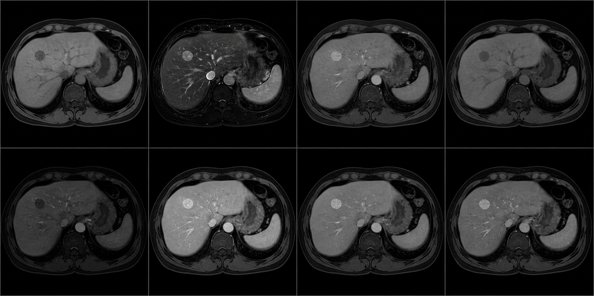

Báo cáo tiến độ:
Ứng dụng AI trong phân loại bất thường gan trực tiếp trên MRI 3D đa thì

Báo cáo tiến độ:

Bài toán
Phân loại 7 lớp ở mức ROI. Ác tính: HCC, ICC, di căn. Lành tính: nang, u máu, FNH, áp-xe.
Vị trí tổn thương cho trước, nên không phải phát hiện, cũng không phải segmentation.
8 thì MRI 3D: C-pre, C+A, C+V, C+Delay, T2WI, DWI, In Phase, Out Phase.
Mô hình nhận khối 8 × 112 × 112 × 14, tức 8 thì xếp thành 8 kênh.
7 xác suất, một mức bất định, một cờ defer.
Hai thứ sau là phần đóng góp chính của đề tài, không phải phụ kiện của xác suất.
Dữ liệu
| Tập | HCC | u máu | ICC | áp-xe | nang | di căn | FNH | Tổng |
|---|---|---|---|---|---|---|---|---|
| train + val | 125 | 63 | 46 | 42 | 42 | 40 | 36 | 394 |
| test | 32 | 16 | 12 | 12 | 11 | 11 | 10 | 104 |
| Cấu hình | val out-of-fold 394 ca |
test-104 official 104 ca |
|---|---|---|
| DenseNet121-3D cũ | 0,6851 [0,6394; 0,7308] | 0,6162 [0,5246; 0,7032] |
| UniFormer-S + Kinetics chính | 0,8147 [0,7746; 0,8547] | 0,7682 [0,6902; 0,8422] |
| hiệu, bootstrap ghép cặp | +0,1296 [+0,0778; +0,1809] P < 0,001 | +0,1520 [+0,0647; +0,2421] P = 0,001 |
| Cấu hình | ECE | tự tin thái quá |
macro-F1 @80% |
|---|---|---|---|
| DenseNet121-3D | 0,1303 | +0,115 | +0,0696 |
| UniFormer-S + Kinetics | 0,0833 | +0,042 | +0,0739 |
Từ chối 20% ca khó nâng macro-F1 0,768 lên 0,842 (P = 0,027). test-104
macro-F1 từng lớp · UniFormer-S + Kinetics · CI95 bootstrap mức bệnh nhân.
| Lớp n val / test |
val out-of-fold 394 ca |
test-104 official 104 ca · lần chạm thứ hai |
|---|---|---|
| u máu 63 / 16 | 0,912 [0,857; 0,960] | 0,938 [0,839; 1,000] |
| ICC 46 / 12 | 0,731 [0,630; 0,821] | 0,621 [0,438; 0,800] |
| áp-xe 42 / 12 | 0,814 [0,725; 0,894] | 0,667 [0,400; 0,870] |
| di căn 40 / 11 | 0,576 [0,433; 0,714] | 0,500 [0,222; 0,737] |
| Lớp n val / test |
val out-of-fold 394 ca |
test-104 official 104 ca · lần chạm thứ hai |
|---|---|---|
| nang 42 / 11 | 0,897 [0,833; 0,955] | 0,957 [0,880; 1,000] |
| FNH 36 / 10 | 0,895 [0,822; 0,959] | 0,909 [0,800; 1,000] |
| HCC 125 / 32 | 0,878 [0,835; 0,916] | 0,787 [0,667; 0,885] |
Thứ tự ưu tiên
Đóng gói pipeline suy luận ổn định để sẵn sàng đưa vào demo.
Biến kết quả thành trải nghiệm rõ ràng, dễ kiểm tra cho người review.
Hoàn thiện README, report và gói tái lập để bàn giao được đầy đủ.
4. Fine-tune tiếp, nếu còn thời gian. Chỉ tiếp tục thí nghiệm sau khi ba ưu tiên trên đã hoàn tất.